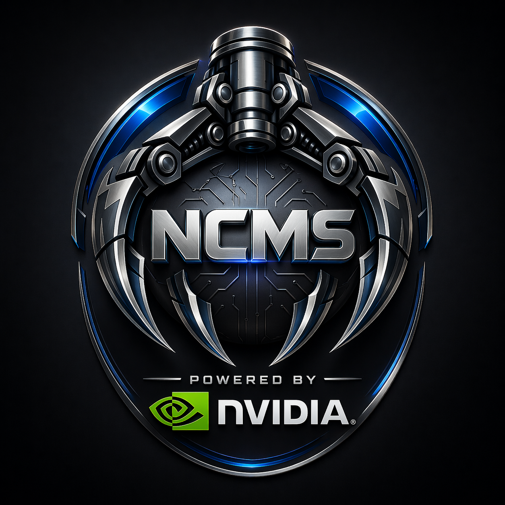
Cognitive Memory SystemFrom cognitive memory system to auditable document intelligence pipeline in three weeks. Powered by Nemotron 3 Nano on DGX Spark, orchestrated by NeMo Agent Toolkit, sandboxed in NemoClaw.
Fourteen minutes ago, someone typed "Research authentication patterns for identity services" into a text box and clicked Start Pipeline.
Now there are five documents: a market research report grounded in 40 sources across web search, academic papers, USPTO patents, and HackerNews community sentiment. A PRD with full traceability to every research finding. A TypeScript implementation design reviewed against architecture decision records and STRIDE threat models. A requirements manifest. A structured review report. All persisted in a tamper-evident audit chain with SHA-256 hash verification.
Five AI agents built this. Each one is a NeMo Agent Toolkit (NAT) workflow running in its own NemoClaw kernel-isolated sandbox on a k3s cluster. They coordinate through a domain-routed Knowledge Bus. They retrieve governance knowledge from a shared NCMS memory store. The model powering all of them: NVIDIA Nemotron 3 Nano: a 30B-parameter Mixture-of-Experts model with 256 experts and only 3B active parameters per inference. Served by vLLM with 512K context on a DGX Spark sitting on a desk. 128GB of unified memory. Sub-second inference.
Three weeks ago, none of this existed. NCMS was a cognitive memory system. Good at storing and retrieving knowledge across agent sessions, but not yet capable of producing anything.
This is the story of how it became a Document Intelligence system, and the engineering decisions, experiments, and hard-won insights that made it work.
Why does this matter? A typical engineering team takes days to produce a research report, PRD, and implementation design for a new feature. This pipeline does it in 14 minutes with full audit traceability: claims traced to sources, decisions grounded in expert knowledge, artifacts linked to predecessors. It doesn't replace the team. It gives them a 90% complete starting point with a governance chain that a compliance officer can verify.
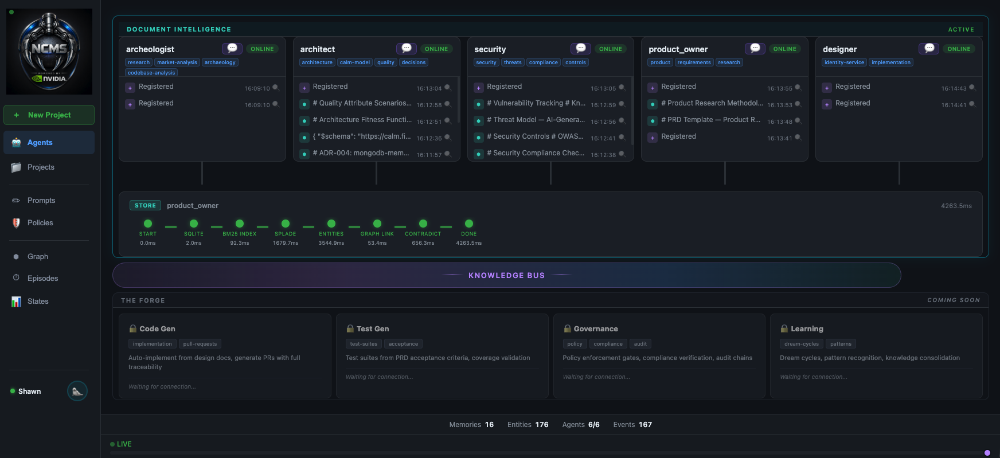
The NCMS dashboard showing all five Document Intelligence agents online, with The Forge (future phases) below the Knowledge Bus.
Document persistence, entity extraction (GLiNER), D3 document flow graph, project lifecycle, pipeline progress visualization. 16 features in Phase 2.5.
JWT authentication, tamper-evident hash chains, unified audit timeline, provenance certificates, compliance scoring, guardrail gates with human-in-the-loop approval. The three-model experiment (Nano vs Super vs Qwen). Agent consolidation from 6 to 5.
USPTO patent search with abstract fetching, HackerNews community sentiment, Jobs-to-be-Done synthesis, LLM-planned queries for 4 engines, research methodology audit, loss point fixes (metadata propagation from research through design), The Forge UI.
Here's a dirty secret about most AI memory systems: they compress your documents into 1536-dimensional vectors and then pray that cosine similarity finds the right answer. Search for "JWT rotation policy" and you might get a document about "authentication token refresh" because they're nearby in embedding space. Close enough? Not when you're building auditable engineering documents.
We needed something different. A memory system that could reason about time ("what was the Redis config before the upgrade?"), track how knowledge evolves, and understand which version of a fact is current. NCMS is that system.
NCMS uses three complementary retrieval signals instead of dense embeddings:
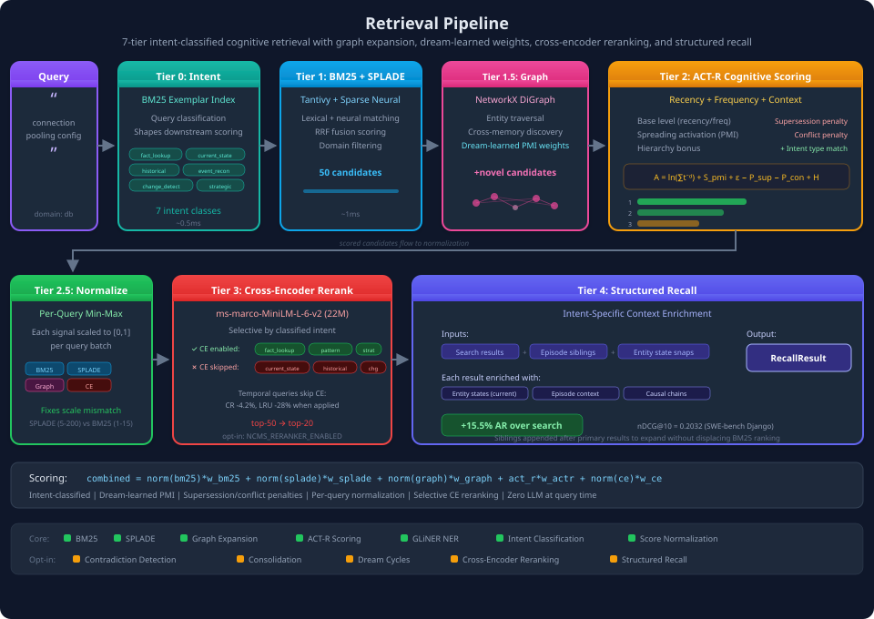
The five-tier retrieval pipeline: Intent Classification → BM25+SPLADE Hybrid → Graph Expansion → ACT-R Scoring → Cross-Encoder Reranking → Structured Recall.
nDCG@10 = 0.7206 on SciFact, exceeding published ColBERTv2 (0.693, +4.0%) and SPLADE++ (0.710, +1.5%). Zero dense embeddings. Zero external API calls. Everything runs locally.
On 850 real GitHub issues from SWE-bench Django, NCMS delivers 6.3x better temporal reasoning than Mem0 and 2.8x better cross-document association than Letta. Both competitors use OpenAI's text-embedding-3-small. We use zero API calls.
| Metric | NCMS | Mem0 | Letta |
|---|---|---|---|
| Temporal Reasoning (nDCG@10) | 0.1217 | 0.0194 | 0.0421 |
| Cross-Document Association | 0.2031 | 0.0614 | 0.0718 |
| Structured Recall AR | 0.2031 | 0.0614 | 0.0718 |
| SciFact Retrieval | 0.7206 | — | — |
The architecture underneath is what makes this possible: a Hierarchical Temporal Memory Graph (HTMG) where raw facts crystallize into tracked states, states cluster into temporal episodes, and episodes consolidate into strategic insights during offline dream cycles.
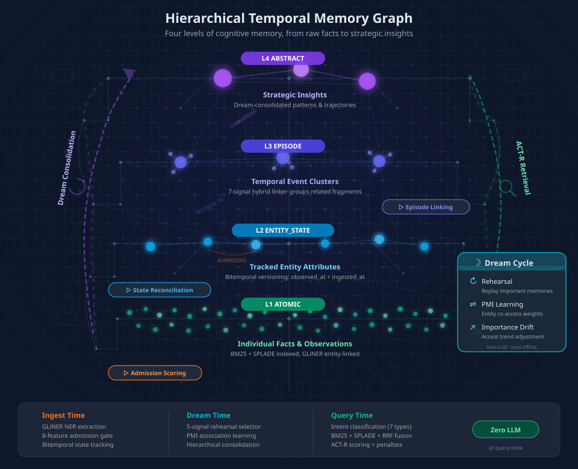
The four-level HTMG: Atomic facts → Entity States → Episodes → Abstract Insights. Dream cycles consolidate knowledge overnight.
The retrieval pipeline has seven layers of intelligence that most memory systems skip:
Intent Classification. Before retrieval begins, the query is classified into one of 7 intent types: fact lookup, current state, historical, event reconstruction, change detection, pattern, and strategic reflection. This shapes which memory types receive scoring bonuses. Asking "what changed?" boosts entity states. Asking "what patterns emerged?" boosts abstracts.
Score Normalization. SPLADE naturally scores 5-200 while BM25 scores 1-15. Without per-query min-max normalization, SPLADE gets 13x the influence regardless of configured weights. This invisible fix is essential for the benchmark results.
Selective Reranking. A 22M-parameter cross-encoder reranks candidates, but only for fact lookup and pattern queries. For temporal and state-change queries, reranking destroys chronological ordering (CR -4.2%, long-range utility -28%). Knowing when NOT to rerank matters as much as knowing when to do it.
State Reconciliation. When a new entity state arrives ("Redis upgraded to v7.4"), the system classifies its relationship to existing states: supports, refines, supersedes, or conflicts. Superseded states get is_current=False with bitemporal validity closure. Stale knowledge is automatically penalized in retrieval. You always get the current truth first.
Episode Formation. Related memories cluster into temporal episodes via a 7-signal hybrid linker: BM25 lexical match, SPLADE semantic match, entity overlap, domain match, temporal proximity, source agent, and structured anchors (like JIRA tickets). This gives structure to "what happened during the API v2 migration" without requiring anyone to manually organize knowledge.
Dream Cycles. Like biological sleep consolidation, NCMS runs three non-LLM passes during "sleep" to create differential access patterns that make ACT-R cognitive scoring meaningful:
These aren't academic features. They're the engineering underneath the benchmark numbers. The retrieval pipeline looks simple from the outside. Seven layers of intelligence make it work.
Building the document intelligence pipeline on top of this memory system taught us three things that fundamentally shaped the architecture.
When we added knowledge-aware prompts describing what each agent has access to (STRIDE threat models with specific threat IDs for Security, ADRs and CALM specifications for the Architect), the same 3B-active-parameter model went from producing generic responses to citing THR-001, NIST IA-2(1), and OWASP ASVS v5.0 control sections. No model change. No fine-tuning. Just better prompts.
The agents always had the capability. They just didn't know they had the knowledge to cite.
When we replaced open-ended ReAct loops with deterministic LangGraph pipelines, the agents stopped exploring and started executing. Each node in the graph has exactly one job. The LLM generates content. The graph enforces sequence, parallelism, and handoffs.
One message produces five documents, every time, with no retries and no dead loops.
Adapted from Meta's "Agentic Code Reasoning" (arXiv:2603.01896), we replaced free-form prompts with semi-formal certificate templates. Every research report must state explicit source premises ("S1: Okta reports 70% workforce MFA adoption"), trace evidence through cross-source analysis with confidence ratings (HIGH/MEDIUM/LOW), identify evidence gaps, and derive formal conclusions with citation chains before making recommendations. The PRD must extract research premises (R1-RN) and expert premises (E1-EN), then trace every functional requirement back to specific premises. You can't hand-wave. The template won't let you.
In an 8-way experiment (standard/semi-formal × CoT-on/off × 1-stage/2-stage), the semi-formal + CoT configuration scored 53/60 vs the standard baseline at 41/60. A 29% improvement in traceability, coverage, and grounding.
Each agent's sandbox has explicit network policies controlling which external APIs it can reach. The Archeologist can hit USPTO and HackerNews. The Designer cannot. Secrets are injected via OpenShell providers, never hardcoded. No shared filesystem, no shared memory space.
Coordination happens through the NCMS Knowledge Bus: fire-and-forget domain-routed announcements that trigger downstream agents automatically. No orchestrator. No polling. No shared state.
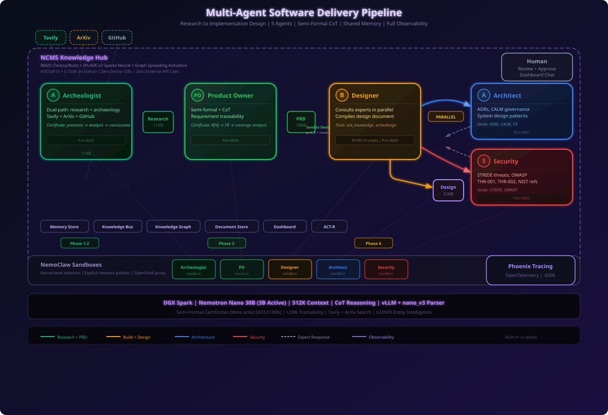
Five specialized agents coordinate through a shared Knowledge Bus. Each runs in its own NemoClaw sandbox with the NeMo Agent Toolkit.
| Agent | Role | Pipeline |
|---|---|---|
| Archeologist | Research | plan → web search (5×) → ArXiv → USPTO patents → HackerNews → synthesize |
| Product Owner | PRD | read research → ask experts → synthesize PRD → generate manifest |
| Designer | Design | read PRD + research → ask experts → synthesize → guardrail → review loop |
| Architect | Governance | classify → search NCMS memory → answer or structured review |
| Security | Governance | classify → search NCMS memory → answer or structured review |
The Architect and Security agents are the governance backbone of this pipeline. They don't produce documents. They make everyone else's documents better.
Before the pipeline runs, these agents seed the NCMS memory store with domain knowledge: Architecture Decision Records (ADRs documenting technology choices and trade-offs), CALM model specifications (service boundaries, component interactions, infrastructure patterns), quality attribute scenarios (performance, scalability, availability targets), STRIDE threat models with specific threat IDs (THR-001 through THR-008), and OWASP ASVS control mappings.
When the Product Owner builds a PRD, it consults both experts in parallel. The Architect responds with ADR-aligned recommendations. The Security agent responds with threat analysis grounded in STRIDE and NIST SP 800-63B. Their input gets woven into the PRD as formal expert premises (E1-EN) that every functional requirement must trace back to.
When the Designer builds the implementation design, it consults the same experts again. This time they have the PRD context. The Architect checks against CALM service boundaries and quality attributes. Security checks against OWASP controls and authentication requirements. After the design is published, both experts perform structured reviews with SCORE/SEVERITY/COVERED/MISSING/CHANGES format. The design iterates until it meets the quality threshold (85% average).
Two agents. Consulted four times. Every recommendation grounded in governance knowledge that lives in the shared memory store.
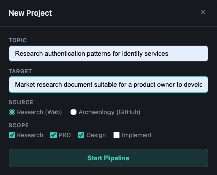
One prompt starts the entire pipeline. Choose Research (web) or Archaeology (GitHub repo analysis).
The pipeline isn't limited to greenfield research. Point the Archeologist at an existing GitHub repository and it switches to archaeology mode: clone the repo, analyze the architecture, identify gaps and technical debt, run targeted web research on what it finds, and synthesize a grounded report. The same downstream agents (Product Owner, Designer, Architect, Security) then produce a PRD and design for modernizing or extending the existing codebase. Same pipeline, same audit trail, same governance. Whether you're building something new or improving something old.
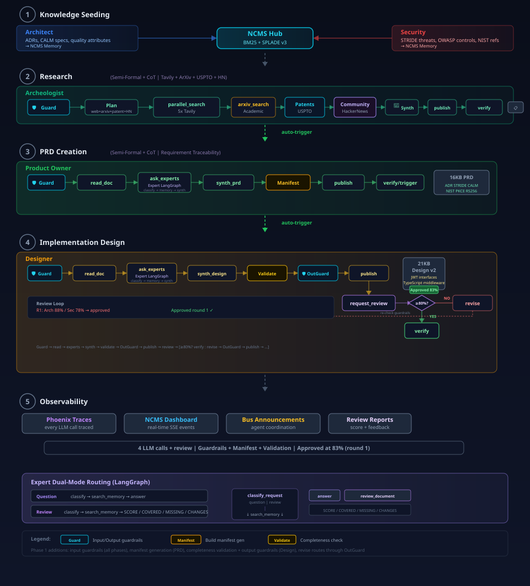
Detailed pipeline phases showing every node in the Research, PRD, and Design pipelines. Each node is interruptible.
The original research pipeline searched the web and ArXiv. Good for general information, but missing three critical layers for product ideation: what's already been invented (patents), what developers actually complain about (community sentiment), and what job the customer is hiring this product to do (Jobs-to-be-Done whitespace analysis).
The JTBD framework forces a different question. Instead of "what features should we build?", the research asks: "what job is the user hiring this product to do, where are current solutions failing them, and where is the market over-serving?" Combined with patent landscape analysis (freedom to operate, coverage gaps) and real developer community evidence from HackerNews, the research report becomes a product strategy document, not just a literature review.
We added two new search engines and a Jobs-to-be-Done synthesis framework. The LLM plans all queries upfront. One call generates optimized queries for all four engines, each tailored to the platform's search semantics:
data.uspto.gov to extract the full abstractEvery search result, every query plan, every fallback decision is tracked in the audit timeline as a first-class event. The research methodology is embedded in the document metadata and flows through the entire pipeline, from research to PRD to design.
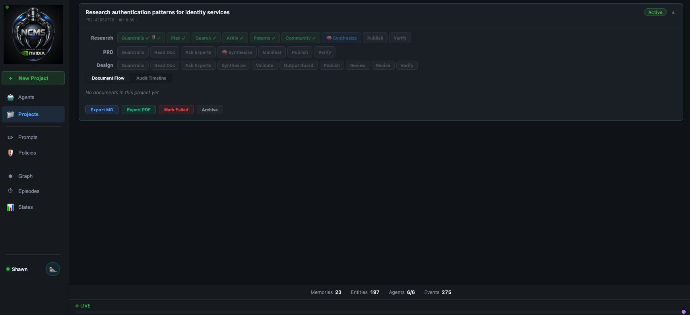
Pipeline progress during the research phase, showing completed search nodes with checkmarks.
We tested three models on the same project, same prompts, same pipeline, same expert knowledge:
| Metric | Nano 30B (3B active) | Super 120B (12B active) | Qwen3.5 35B (3B active) |
|---|---|---|---|
| Review score (round 1) | 85% / 85% | broken (0 chars) | 82% / 72% |
| Revision rounds | 1 | N/A | 3 |
| Final quality | 85% | N/A | 83.5% |
| Pipeline time | 14.5 min | pods killed | 28.8 min |
| Documents produced | 5 (54KB) | 3 (broken) | 7 (122KB, bloated) |
Model size is not the differentiator. Nano (3B active) outperformed both Super (12B active) and Qwen3.5 (3B active) because it was specifically trained for the structured output patterns our pipeline uses. The semi-formal certificate format, SCORE/SEVERITY/COVERED review structure, and JSON manifest generation all benefit from Nano's training data alignment, not raw parameter count.
Super's PRD was 65KB of triplicated </think> tags with zero usable content. Qwen's design bloated from 23KB to 31KB across three revisions without improving. Nano's manifest had 9 endpoints including GDPR and SAML compliance; Super's had 1.
When your pipeline uses structured output formats (certificates, review templates, JSON manifests), test against models trained on those patterns. A 4x larger model that can't follow your template is worse than useless. It's a pipeline killer.
Every document produced by this pipeline is an auditable artifact. Not because we added logging as an afterthought, but because the audit system is the pipeline.
All stored with tamper-evident hash chains (SHA-256 prev_hash on every audit table) and verified on export. JWT authentication ensures mutations are attributed. The compliance score is a 5-signal composite: review average (40%), guardrail violations (20%), grounding coverage (15%), approval gate (15%), document completeness (10%).
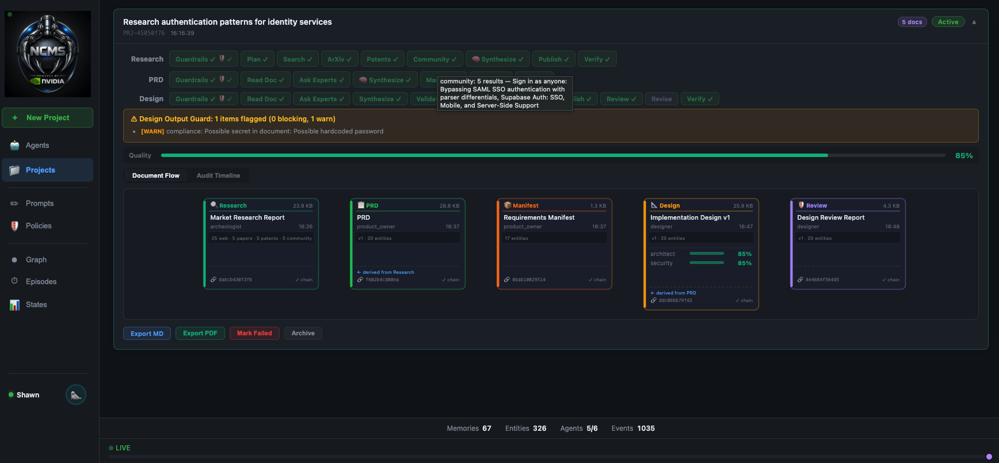
Document flow cards showing type-specific metadata, review scores, content hashes, and chain verification badges.
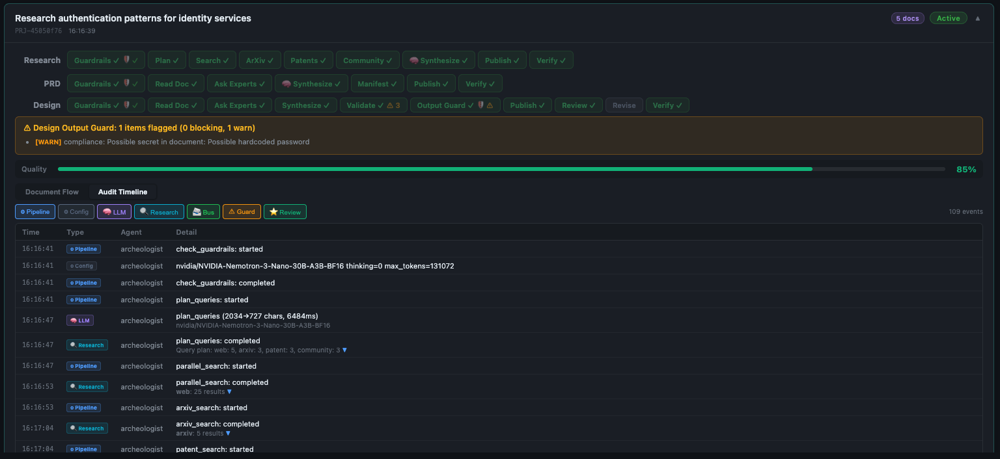
Audit timeline with Research badges showing query plans, search results, and patent abstract counts. Each row is expandable.
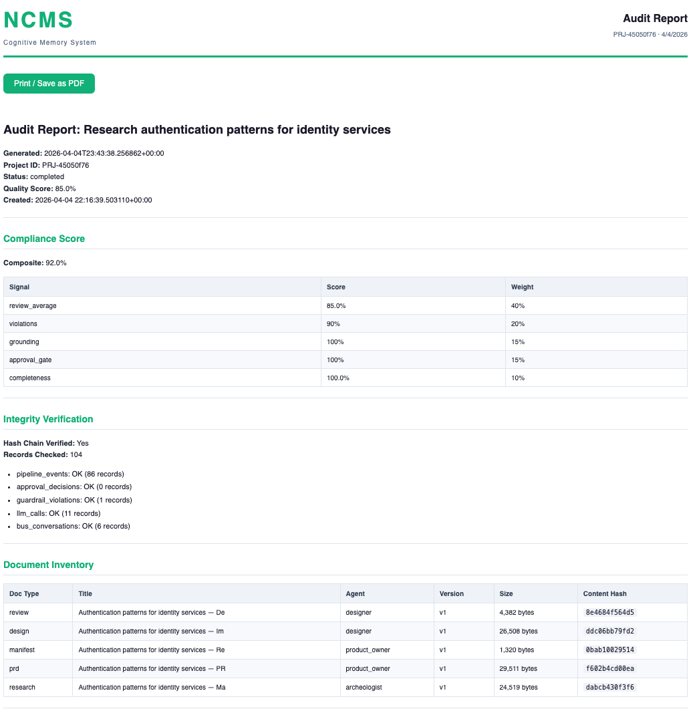
Exported audit report with hash chain verification, research methodology, and compliance scoring.
Building a multi-agent pipeline is hard. Building one where information actually flows through every handoff is harder.
Our first clean run produced a research report with 5 patents and a JTBD analysis. The PRD referenced the patents. The design doc? Zero patent references. Research data was gathered, synthesized, published, and then lost at every handoff between agents.
The root cause was systematic: each agent passed a document ID to the next, but the structured metadata (query plans, patent counts, source breakdowns) lived only in the research document. Expert questions were generic. The design agent never even saw the research document, only the PRD. And the design prompt had no required section for research traceability, so the LLM generated 9 code-focused sections and silently dropped the research context it was given.
The fix: metadata propagation through the entire chain. Documents now carry research_methodology in their metadata. Expert questions include patent counts and community evidence. The design trigger passes research_id alongside prd_id. And a 10th required output section, "Design Rationale & Research Traceability", forces the LLM to cite specific patents, map JTBD alignment, and reference whitespace analysis.
After the fix: 9 patent references in the design doc, with specific patent numbers (US20260067075A1, US20260067072A1), freedom-to-operate assessment, and JTBD alignment. The data was always there. The pipeline just needed to carry it.
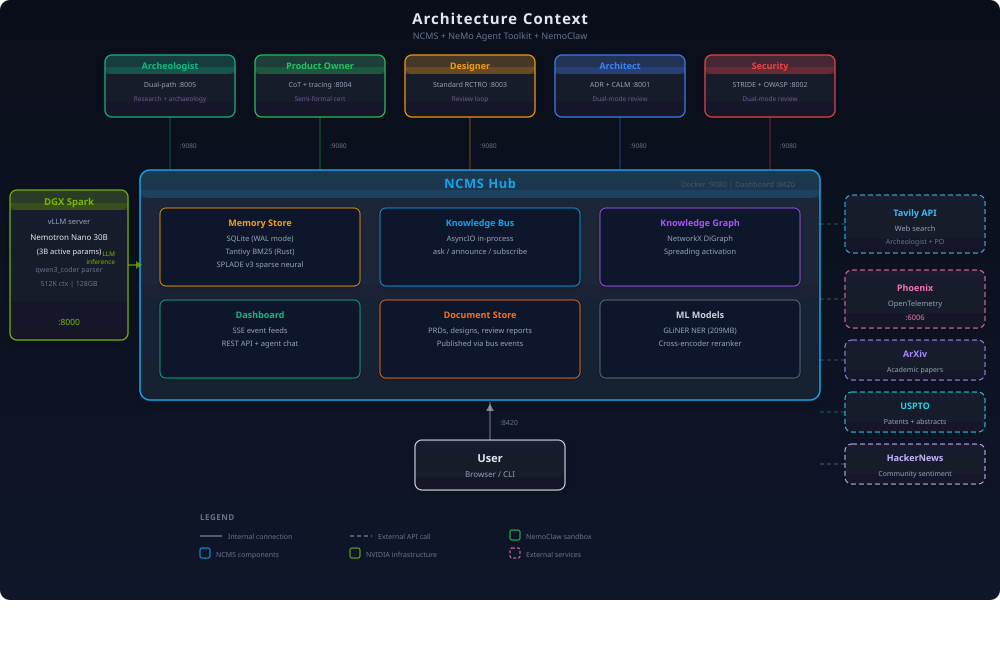
The full system: five agents in NemoClaw sandboxes, NCMS Hub with Knowledge Bus, DGX Spark inference, and external research APIs (Tavily, ArXiv, USPTO, HackerNews).
Document Intelligence is Phase 1. Below the Knowledge Bus on the dashboard, four locked agent cards hint at what's coming:
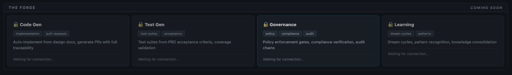
The Forge: four future agent cards below the Knowledge Bus, matching the visual style of the active Document Intelligence agents.
When Code Gen comes online, a design document won't just describe what to build. It will generate the implementation, create a PR, and link every function back to the PRD requirement that demanded it. Test Gen will read the PRD's acceptance criteria and generate the test suite before a line of production code is written. The Governance agent will verify policy compliance automatically. And the Learning agent will run dream cycles across all projects, discovering patterns that no single project could reveal.
The memory system underneath already supports all of this. Dream cycles learn association strengths from search patterns. Episodes cluster related work. State reconciliation tracks what's current vs superseded. The infrastructure is waiting for the agents.
Every layer of this system is NVIDIA:
qwen3_coder tool parser and nano_v3 reasoning parser for clean Chain-of-Thought separation.nat start fastapi command boots each agent inside its sandbox.No external LLM APIs. No cloud inference. No orchestrator. Five agents, one DGX Spark, one desk.
Before and after adding market intelligence (patents, community, JTBD) to the pipeline:
| Document | Baseline | Market Intel | Change |
|---|---|---|---|
| Research Report | 9.4 KB (9 sources) | 24.8 KB (40 sources) | +163% |
| PRD | 16.3 KB | 24.6 KB | +51% |
| Design | 22.0 KB (0 patent refs) | 23.7 KB (9 patent refs) | +7% |
| Review | 4.4 KB | 7.1 KB | +63% |
| Total | 54.4 KB | 81.4 KB | +49% |
Three weeks is enough time to build something real if you make the right bets early. Here are the five that mattered most:
</think> tags. Nano's had 9 GDPR-compliant endpoints. Test models against your actual pipeline, not generic benchmarks.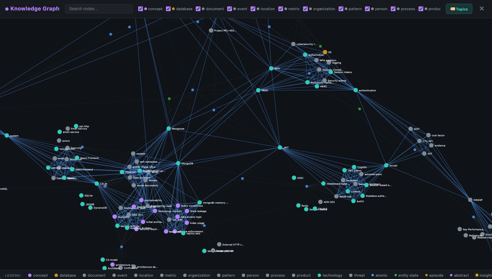
The NCMS knowledge graph after a complete pipeline run. Every node is an entity extracted by GLiNER; every edge represents co-occurrence in agent-produced documents. This graph feeds the spreading activation signal in retrieval — when the next project starts, the system already knows that "JWT" relates to "RBAC" relates to "NIST SP 800-63B".
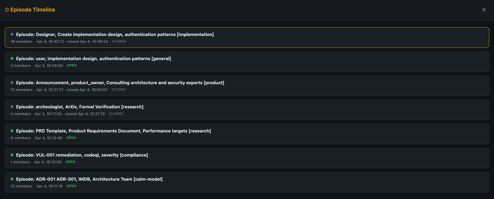
Episode timeline showing how related memories cluster automatically. Each episode groups fragments from the same project or topic.
pip install ncms
uv run ncms demo # See agents collaborate in 10 seconds
uv run ncms dashboard # Real-time observabilityThe full Document Intelligence pipeline requires the NeMo Agent Toolkit and a DGX Spark (or any vLLM endpoint serving Nemotron Nano). The NemoClaw NAT Quickstart has the complete deployment guide.
The core memory system runs anywhere with pip install ncms. 18 MCP tools via FastMCP, Claude Code and GitHub Copilot hooks for auto-loading context on every commit, a knowledge bus for agent coordination, dream cycles for offline learning, and a real-time dashboard with D3 visualization. No GPU required. No external services. Three seconds to first query.